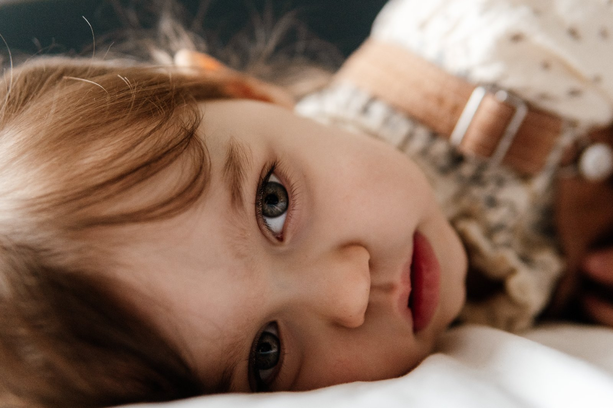
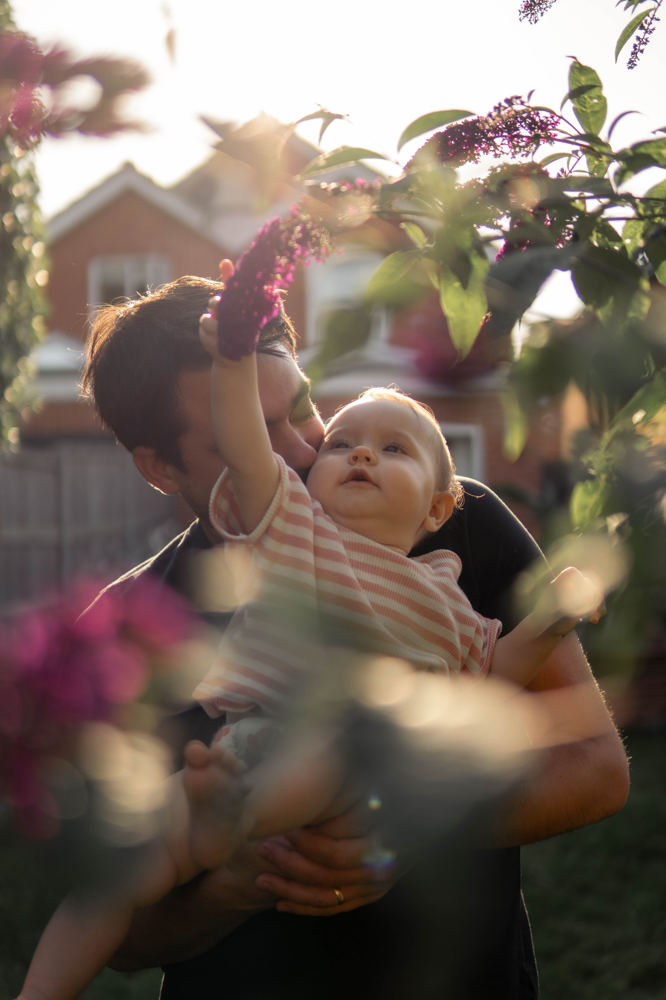
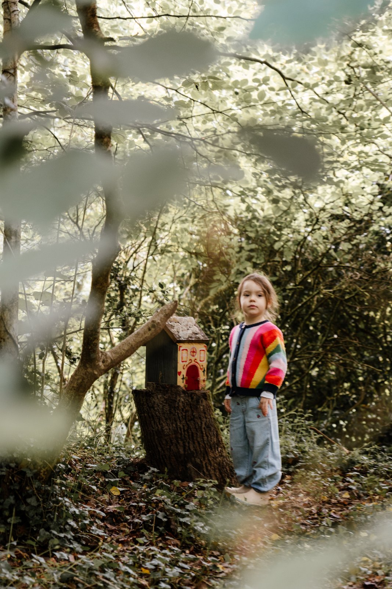
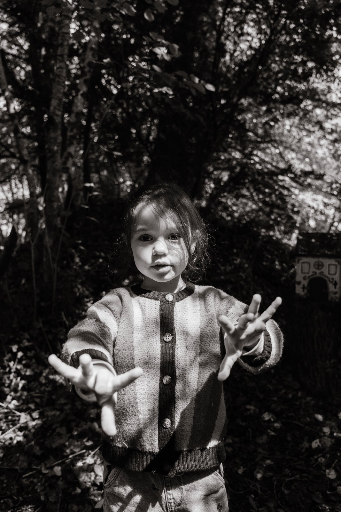

I am here to honour this season in your family's unique story - the whole range of feelings: the soft and the pretty, the chaos and the giggles, the tantrums as much as the triumphs.
These are the moments you will want to look back on. The ones quietly shaping who you are, long before you will know to call them your favourites.

A Brazilian turned British, mum to two wonderful and very, ahem, assertive little girls, and someone who is happiest paddleboarding, at a sound bath, or turning the kitchen into a dance floor with the kids.

My passion for photography was rekindled back in 2019, when my husband and I decided to go on a year-long trip to explore the world. I picked up a camera to document our journey, and it never really left my hand again.
Coming home and starting our family changed everything. Motherhood propelled me into a new understanding of life. Somewhere in there, I started photographing my own kids, desperately trying to hold onto every stage before it disappears. That is exactly why I do this now. I know these moments don't last, because I am living them too.


One of the most joyful things about raising my own family is watching my daughters' personalities take shape, every day becoming more completely themselves.
That is exactly what I want to capture in your session: your personalities, the expressions, the closeness, the deep, unbreakable bond.
I want you to look at these photographs one day and feel exactly what it felt like to be here.
I want your session to feel like real life, not a performance. I am not there to direct every moment, I'm keeping up with it while you get on with being you.
Little ones have a way of making magic out of the most mundane things: the mischief, the giggles, the love you can see in a single look. My job is to notice it and hold onto it.
I give our sessions plenty of time so nothing feels rushed, gently guiding here and there while I create a record of your love and who you are, in this exact season of your life.
Telling you to stay still or hold a pose. I capture things as they actually happen, so the session flows rather than becoming a sequence of set-ups.
Using generic props. Bring sentimental things instead: a toy your little one loves, a blanket knitted by family.


Sessions happen at home, in the woods, or wherever your family feels most yourselves - across Hertfordshire, London, and further afield.
Share a little about your family, and we'll have a relaxed chat: who's who, what you love doing together, and what feels right for you.
A £75 booking fee makes it official (it comes off your balance). I will take care of all the practical bits from here, and I will check in before the session about location, timing, what to wear, and anything on your mind.
I'm always on hand. You will never be left wondering what happens next.
At home, in the woods, wherever your family feels most yourselves. Games, cuddles and snack breaks are all part of the plan.
Within two weeks, a private gallery of hand-finished photographs will be with you. The big laughs and the in-between moments, ready to choose and download your favourites.

An introductory price to celebrate the launch. Once the first ten sessions are booked, it moves to my standard £250.
After your gallery arrives, add 5 more images for £100, or upgrade to the full gallery (20+ images) for £200. No pressure, no minimum. You will also have the opportunity to order printed images straight from your gallery.
A non-refundable £75 booking fee secures your session date. The balance is due before your gallery is delivered.

Completely normal, and it always settles. I am not looking for perfect poses, I am looking for you, being you. Give it twenty minutes of being ignored by me in the nicest possible way, and the camera stops mattering.
That's exactly what I expect, and I plan for it. The in-between moments are usually the best ones anyway.
No stress at all! We simply find a new date. Life with a family is unpredictable, and I plan around that, not against it.
Whatever feels like you. I'll happily give you a steer beforehand, but there's no dress code here, just comfortable and true to your family.
A lived-in home is exactly what makes these photos feel like you. Just clear a little space to move around in, and tuck away anything that adds mess rather than character (laundry piles, yes; toys on the floor, not a problem).
Of course! Just ask, and I'll share a full set from a real session so you can see exactly what to expect.
No. Every image you receive has been through my own hand-editing process, so you get a consistent, polished set.
I also photograph in London, and I'm always happy to travel further (a travel fee applies).
These are relaxed, lifestyle sessions rather than posed studio ones, so there's a lot more flexibility, but up to 4 weeks old is ideal.
Yes! Newborn sessions usually work best in-home, in your little bubble of love.
Completely normal, and I plan the whole session around your baby's rhythm, not the other way round.
